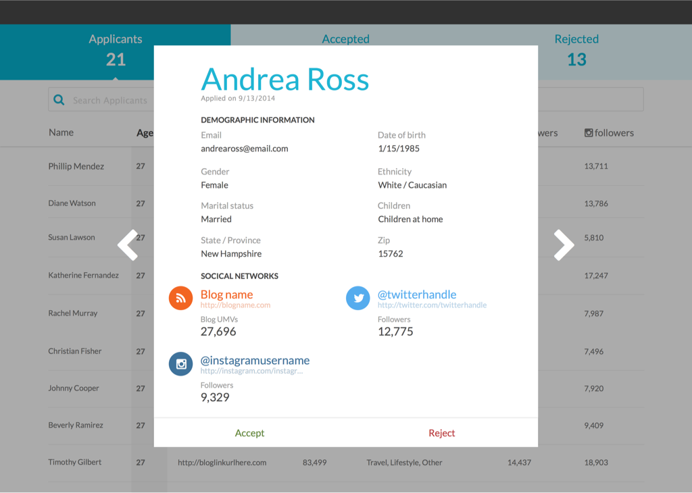

Socialstars is a network of high quality bloggers and social media influencers who create content with brands.
And for the first year it operated, it was run completely via emails and Google docs (shh, don't tell anyone).
The Socialstars product came out of the recognition that the Crowdtap promise could be tweaked—rather than deliver average quality User Generated Content at scale, it delivers a small amount of extremely high quality UGC.
Similar.
But different.
A brand using Socialstars could generate a handful of very high quality blog/social media posts, via Socialstars' influencers. These influencers have large followings across multiple social media channels and each one is vetted individually. You can learn more about the Socialstars mission here.
From emails and spreadsheets to product


After signing up, a user must be vetted internally. This allows the team to maintain the service's high standard of quality.


So, what's happening while an applicant waits? Emails, of course.
And then they're in.